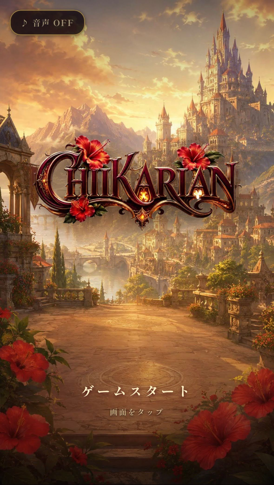

個人制作したゲームを置いています。

ダークファンタジー・ガチャ育成カードゲーム
西洋ゴシック調のダークファンタジー世界を舞台にした、ガチャ育成カードゲームです。 あなた自身は戦わず、現実で見つけた明滅する赤い光をスマホのカメラでとらえて資源「チカリウム」に変え、 辺境を守る戦士たちに力を届ける「灯し手」となります。 チカリウムでカードを引いて戦士を育て、世界を覆う巨大な敵に挑みましょう。 毎日少しずつ遊べる設計です。
ゆる育成ゲーム
点滅する光をスマホのカメラで捉えると、ちかりちゃんが少しずつ成長していきます。 頑張らなくていい、ゆるくてのんびりした育成ゲーム。 日々ひとりごとをつぶやくちかりちゃんを、気ままに眺めて楽しみます。